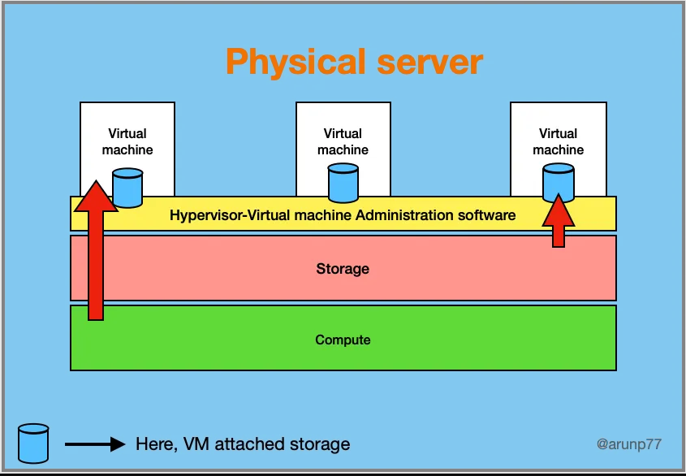

Cloud Computing: Revolutionizing the Digital Landscape
Introduction to cloud
Cloud computing is a transformative technology that has revolutionized the way businesses and individuals manage, store, and process data and applications. It’s a paradigm shift from traditional on-premises infrastructure to a more flexible, scalable, and cost-effective model.
What is Cloud Computing?
Cloud computing involves delivering various computing services (like storage, databases, servers, networking, software, analytics, and more) over the internet (the cloud) to offer faster innovation, flexible resources, and economies of scale. The success of a cloud computing service provider depends on:
- Highly available and scalable resources
- Multiple layers design of redundancy so that if one component fails, its workload is automatically and instantly moved to a healthy replacement.
- Connect resources in geographically remote locations so that the failure of one component region could trigger a predefined relocation.
- With access to as much computing power as they could possibly need, and deliver that power on demand.
- Can provide cost-effective services to its customers.
Server Virtualization:
The basics: The secret sauce that lets cloud providers give their customers on-demand compute resources in such a wide range of configurations is virtualization. When you request a virtual machine (VM) from a cloud service provider, with a particular configuration (such as particular processor speed, memory capacity, and storage size), your cloud service provider carves the necessary resources from larger existing devices.
Cloud Service Models:
- IaaS (Infrastructure as a Service): Provides virtualized computing resources over the internet. Users can rent virtual machines, storage, and networking. The products generally simulate the look and feel you’d get from managing physical resources. This gives you direct access to a provider’s computing, storage, and networking assets.
- PaaS (Platform as a Service): Offers a platform that allows developers to build, deploy, and manage applications without worrying about the underlying infrastructure. Unlike IaaS, PaaS products simplify the process of building an application by hiding the complexity of the infrastructure that runs it. You are given an interface through which you define the behavior and environment you want for your application.
- SaaS (Software as a Service): Delivers software applications over the internet on a subscription basis, eliminating the need for local installations. It offers services meant to be accessed by end users. An easily recognizable illustration is Google’s Gmail service, which allows users to manage their email by logging into a browser interface or through an email client that’s running locally.
Deployment Models:
- Public Cloud: Services are provided by third-party cloud providers like AWS, Azure, and Google Cloud and are available to the public.
- Private Cloud: Operated solely for a single organization, offering greater control and privacy.
- Hybrid Cloud: Combines both public and private clouds, allowing data and applications to be shared between them.
Advantages of Cloud Computing:
- Scalability: Easily scale resources up or down to meet changing demands. A scalable service will automatically grow in capacity to seamlessly meet any changes in demand. A well-designed cloud-based operation will constantly monitor the health of its application stack and respond whenever preset performance metrics might soon go unmet. A scalable website could be configured to function using a single server during low-demand periods, but any number of additional servers could be automatically brought online as demand spikes. When demand drops back down, unused servers will be shut down automatically.
- Cost Efficiency: Pay only for what you use, reducing upfront capital expenses.
- Flexibility: Access services and data from anywhere with an internet connection.
- Security: Leading cloud providers invest heavily in security measures to protect data.